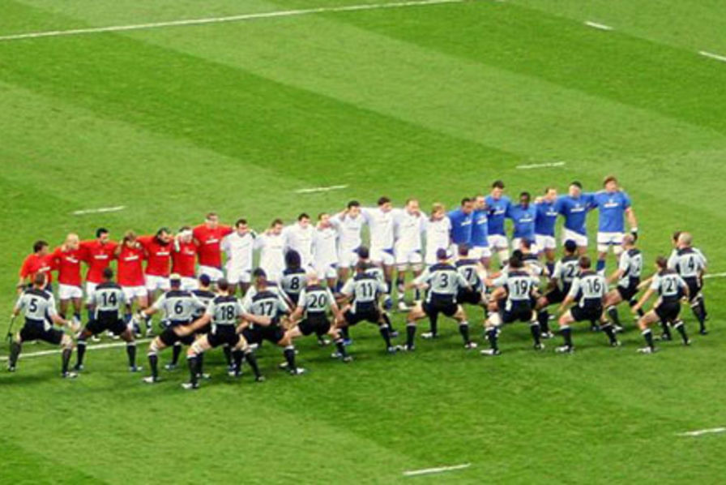
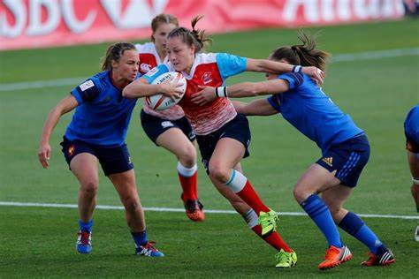
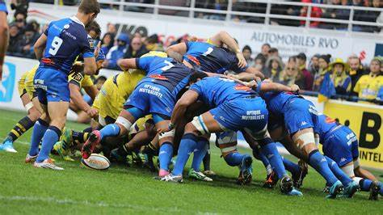
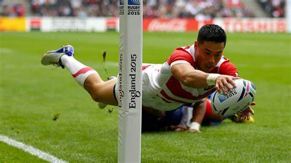
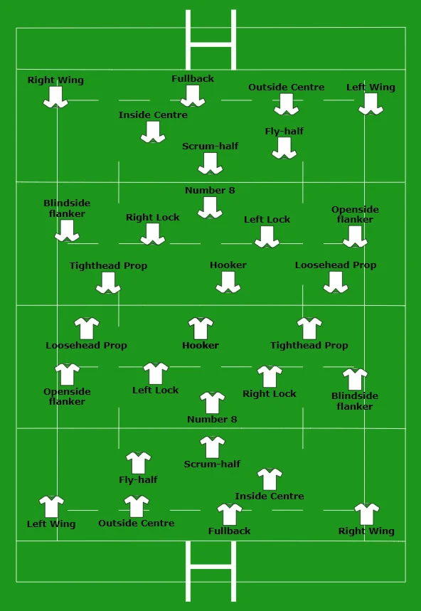

Sport Tactics.
Back to the portuguese page.
- The players have functions and the teams will be more or less equally in 2 lines, as shown in the image merely illustrative, trying to leave the opponent with less possible spaces for advances.

- In the game, there are sometimes changes in the movements of opposing players, moves that you can pretend to pass a ball and keep running to fool the defense, ball kicked in the middle of opposing players to try to create some confusion for who is going for the ball, some rehearsed plays starting from the wings, the decisions to go to the posts at certain moments of the game, to make a simpler game of contact in which whoever has the ball goes to the collision with the opponent and once the ruck is formed, the ball is removed and the game starts again. match.
  
- The tactical disposition of the teams is always, pillars, hooker, wingers, second lines, number 8, Scrum Half, wings, fullback, first and second centers, in the heat of the game when attacking we can have changes of positions, but in general the tactical formation of the teams teams does not change, the attitude of the players on the field is what makes the difference, for example, a player kicks the ball beyond 22 meters, the ball bounces, goes out and the opponent wins a line out near his in goal area, they hit the touchline and lose the ball, your team makes the try and hits the conversion, 7 points won, in a tied game with 5 minutes to go and you have a foul in your favor, your kicker asks to go to the posts and hits , your team hits, your team has a 3 point advantage.

Go back to the beginning.